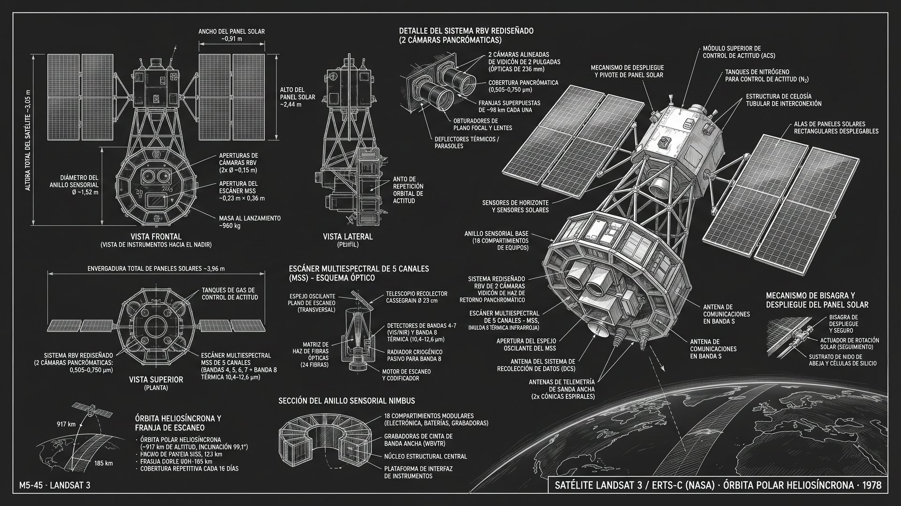

Landsat 3

Fue la tercera unidad de la serie y llevó el primer intento de la familia por medir el calor de la superficie, con una banda térmica que se perdió apenas despegó. Su tarea era sostener el registro de imágenes iniciado por sus dos hermanos mientras el programa pasaba de manos de la NASA a la NOAA.
Puesto en modo de espera el 31 de marzo de 1983 y dado de baja el 7 de septiembre de 1983, según el USGS; su banda térmica del MSS y su RBV rediseñado no llegaron a rendir como se esperaba. No consta en las fuentes consultadas la fecha de su reentrada atmosférica. Personas: Stanley C. Freden, James C. Welch
Lo que hizo
- Instrumentos que se quedaron a medias — Mi RBV fue rediseñado con dos cámaras pancromáticas capaces de 40 m de resolución, el doble que las de mis predecesores. En cambio la quinta banda de mi MSS, la térmica, falló poco después del lanzamiento y nunca pude entregar imágenes de calor.
- El traspaso a la NOAA — En marzo de 1983 me dejaron en modo de espera y en septiembre me dieron de baja. Ese mismo año las operaciones Landsat pasaron de la NASA a la NOAA, mientras el USGS seguía custodiando el archivo de datos.
Modelo 3D, chat y cómic, en tres idiomas
Fuentes
- landsat.gsfc.nasa.gov/satellites/landsat-3/
- www.usgs.gov/landsat-missions/landsat-3
- nssdc.gsfc.nasa.gov/nmc/spacecraft/display.action?id=1978-026A
Ver el índice completo · Proyecto del NASA Space Apps Challenge 2026. Contenido con fuentes citadas.